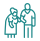

Услуги пансионата для пожилых «Вита»
Комплексный медицинский уход, реабилитация после тяжелых заболеваний и комфортное проживание для ваших близких в условиях, приближенных к санаторным.
Уход за пожилыми по заболеваниям
Специализированный уход с учётом состояния здоровья и индивидуальных потребностей пожилого человека.


Когнитивные нарушения
Психиатрические расстройства
Заболевания нервной системы
Нарушение зрения
Хронические заболевания
Программы реабилитации
Восстановление после заболеваний, травм и операций под наблюдением опытных специалистов.
После инсульта и инфаркта
После травм и операций
Персональный подход
План восстановления составляется с учётом анамнеза и назначений врача.
Форматы и условия проживания
Подберите подходящий формат — от временного размещения до постоянного проживания с уходом 24/7.
Элитный пансионат
Максимальный комфорт и персональный сервис премиум-класса.
Одноместное размещение
Личное пространство и тишина в уютном комфортабельном номере.

Совместное размещение
Проживание в компании сверстников для постоянного общения и социализации.

Дневной дом престарелых
Надёжный присмотр, питание и уход в течение дня, пока вы на работе.
Для одиноких пожилых
Постоянное проживание с круглосуточной заботой, вниманием и безопасностью.
Временное размещение
Спокойствие за близкого человека на период вашего отъезда или ремонта.

На лето
Отдых в экологически чистом зелёном районе с прогулками на свежем воздухе.
Забота и сервис
Медицинское сопровождение и всё необходимое для безопасной, спокойной и полноценной жизни.

Медицинский уход и услуги
Проживание и комфорт
Остались вопросы или нужна помощь в выборе?
Специалист бесплатно проконсультирует по состоянию вашего близкого и рассчитает стоимость ухода.